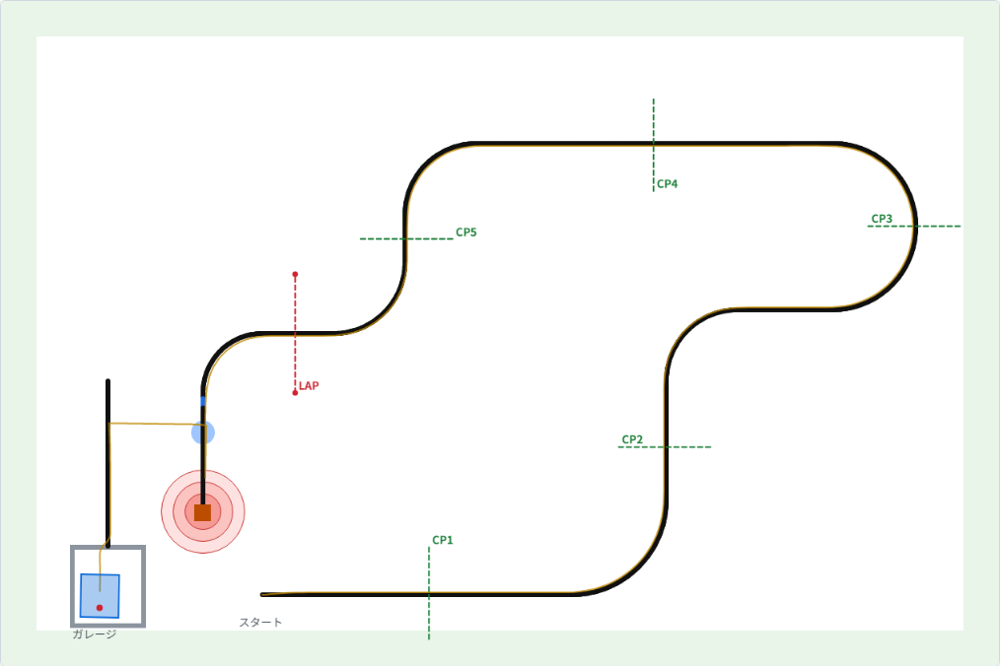

第11回 シミュレータ（1）ライントレース
前の回は文字だけのシミュレータでしたが、この回からは、エントリークラスと同じ点数の付け方をする練習用のシミュレータで、コースを1周させます。走りはブラウザで再生できます。この回は前半のライントレースを、ON/OFF制御から P制御、PD制御へと変えていきます。
用意するもの：第8回のドリル（問題9の PID）、第10回の decide_steering()
説明
シミュレータについて
エントリークラスでは、実機を使わずに画面の中の走行体を走らせます。公式のシミュレータは参加登録が済まないと使えないので、練習用に小さなシミュレータを作りました。点数はエントリークラスの規約どおりに付けますが、コースの形は公式とは違います。

左下のスタートから東へ出て、反時計回りに大きく回ります。途中に緑の点線のチェックポイントが5本、そのあとに赤い点線のLAPゲートがあります。LAPゲートの両端にはポールが立っていて、さわるとLAPの5点がもらえません。LAPのあとのブロック運びとガレージは次の回でやります。
床は白、線は黒で幅20mmです。カラーセンサの反射光は、だいたい白で90、黒で5になります。
自分で書くのは my_robot.c だけ
シミュレータは10msごとに robot_step() を呼びます。センサの値が sensor に入っているので、それを見て command にモータの出力を書く、というのを繰り返します。
void robot_step(const Sensor *sensor, Command *command)
{
if (sensor->reflect > TARGET_REFLECT) { /* 明るい＝線の外 → 右へ */
command->left_power = SPEED + TURN;
command->right_power = SPEED - TURN;
} else { /* 暗い＝線の上 → 左へ */
command->left_power = SPEED - TURN;
command->right_power = SPEED + TURN;
}
}これが最初に入っている my_robot.c です。線の左の縁をたどっています。明るければ右、暗ければ左に、いつも同じ強さで曲がるだけなので ON/OFF制御といいます。
センサには、反射光の reflect のほかに、色の color、向きの gyro_deg、左右の車輪の回転角 left_deg・right_deg、正面の物までの距離 sonar_mm、時間の time_ms があります。モータの出力は -100〜100 で、5〜8より小さいと車輪が回りません。詳しくは シミュレータ/robot_api.h を見てください。
PDで曲がる量を決める
P制御では、ずれに比例して曲がります。
int error = sensor->reflect - TARGET_REFLECT; /* 白に寄ると＋、黒に寄ると− */
int turn = (int)(KP * error);
command->left_power = SPEED + turn;
command->right_power = SPEED - turn;これに、ずれの変わる速さに比例する D を足したのが PD制御です。ここは言葉で読むより、動かしたほうが早いです。下で値を変えると、その場で走り直します。
下のグラフは最初の10秒の反射光のずれ（目標47との差）。真ん中の線が0。
手順
-
ターミナルでシミュレータのフォルダに入って、走らせる
$ cd ~/Desktop/ETrobo/docs/後輩育成/新人研修2027/シミュレータ $ mingw32-make 走行ポイント 7.64 ＋ 課題ポイント 26 ＝ リザルトポイント 33.64 再生: result.html をブラウザで開く -
result.htmlをダブルクリックして、▶ で再生する。「1倍」を押すと速くなる。右のメッセージをクリックするとその時刻に飛ぶ。画面の下にその瞬間の反射光と、左右のモータに出した値が出る my_robot.cを書き換えたら、もう一度mingw32-makeする（ビルドと実行が一緒に走る）
seed を変えると、左右のモータの差や、車輪が回り出す出力、ジャイロのずれが少しずつ変わります。実機も1台ずつ癖が違うので、それをまねています。
$ ./entry_sim --seed 3 # 癖を変える（0 は癖なし）
$ ./entry_sim --seed 3 --quiet # 結果だけ表示演習
演習11-1 今の走りを見る
そのまま走らせて再生してください。直線なのに左右に振れているのはなぜでしょう。画面の下の「左」「右」の値の変わり方を見て考えてください。
答え
ON/OFF制御は、少しでも白なら右に20、少しでも黒なら左に20と、ずれの大きさに関係なく同じだけ曲がる。線の縁の上でずっと右と左を行ったり来たりする。演習11-2 P制御にする
my_robot.c を P制御に書き換えて、速さを70にします。KP を 0.3、1.0、4、8 と変えて、LAPまでの秒数と様子を表にまとめてください。
| KP | LAPまで | 様子 |
|---|---|---|
| 0.3 | ||
| 1.0 | ||
| 4 | ||
| 8 |
KP が小さすぎるとき、大きすぎるときに、それぞれ何が起きましたか。
答え（seed 0）
0.3 は最初のカーブで曲がり切れずに線を外れる。1.0 は12.84秒でなめらか。4 は14.88秒で少し振れる。8 は36.45秒で左右に大きく振れて遅い。小さすぎると曲がり切れず、大きすぎると振れて遅くなる。演習11-3 PD制御で速くする
速さを100にして、P だけ（KP 1.0）で seed 1〜10 を走らせてください。種を変えて回すときは、こう書くと1行で済みます。
for s in 1 2 3 4 5 6 7 8 9 10; do ./entry_sim --seed $s --quiet | tail -1; doneどこで線を外れましたか。そこに D を足して、10本ともポールにさわらずに LAP まで11秒を切ってください。KD は5〜10くらいから試すといいです。
答えの例
KP 1.0、KD 8 で、seed 0〜9 が全部10.2〜10.6秒、ポールなし。演習11-4 スタート直後の動き
PD にすると、スタートした直後の一瞬だけ大きく曲がることがあります。再生のいちばん最初の「左」「右」の値を見て、なぜそうなるのか考えてください。どう直せばいいでしょう。
答え
1回目は「前回のずれ」が0なので、D が（今のずれ − 0）× KD と大きくなる。1回目だけ D を0にすれば直る。本物の `pid_calculator.c` の `has_prev_error` はこのためにある。次回までに
PD制御で seed 1〜10 が全部 LAP まで行く my_robot.c にしておいてください。次回はこれに状態機械を足します。